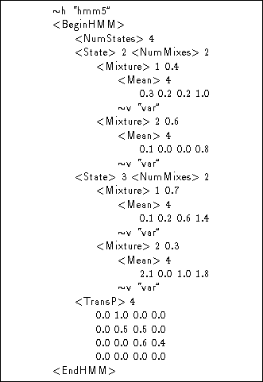
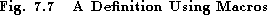

So far, basic model definitions have been described in which all of the information required to define a HMM has been given directly between the <BeginHMM> and <EndHMM> keywords. As an alternative, HTK allows the internal parts of a definition to be written as separate units, possibly in several different files, and then referenced by name wherever they are needed. Such definitions are called macros.
HMM (  h) and global option macros
(
h) and global option macros
(  o)
have already been described. In fact, these are both rather
special cases since neither is ever referenced explicitly by
another definition. Indeed, the option macro is unusual in that
since it is global and must be unique, it has no name.
As an illustration of the use of macros, it may be observed
that the variance vectors in the HMM definition hmm2 given
in Fig 7.3 are all identical. If this was
intentional, then the variance vector could be defined as a macro
as illustrated in Fig 7.6.
o)
have already been described. In fact, these are both rather
special cases since neither is ever referenced explicitly by
another definition. Indeed, the option macro is unusual in that
since it is global and must be unique, it has no name.
As an illustration of the use of macros, it may be observed
that the variance vectors in the HMM definition hmm2 given
in Fig 7.3 are all identical. If this was
intentional, then the variance vector could be defined as a macro
as illustrated in Fig 7.6.
A macro definition consists of a macro type indicator
followed by a user-defined macro name. In this case, the indicator is  v
and the name is var. Notice that a global options macro is included
before the definition for var. HTK must know these before it can
process any other definitions thus the first macro file specified on the
command line of any HTK tool must have the global options macro. Global
options macro need not be repeated at the head of every definition file, but it
does no harm to do so.
v
and the name is var. Notice that a global options macro is included
before the definition for var. HTK must know these before it can
process any other definitions thus the first macro file specified on the
command line of any HTK tool must have the global options macro. Global
options macro need not be repeated at the head of every definition file, but it
does no harm to do so.


Once defined, a macro is used simply by writing the type indicator and name exactly as written in the definition. Thus, for example, Fig 7.7 defines a HMM called hmm5 which uses the variance macro var but is otherwise identical to the earlier HMM definition hmm2.
The definition for hmm5 can be understood by substituting the textual body of the var macro everywhere that it is referenced. Textually this would make the definition for hmm5 identical to that for hmm2, and indeed, if input to a recogniser, their effects would be similar. However, as will become clear in later chapters, the HMM definitions hmm2 and hmm5 differ in two ways. Firstly, if any attempt was made to re-estimate the parameters of hmm2, the values of the variance vectors would almost certainly diverge. However, the variance vectors of hmm5 are tied together and are guaranteed to remain identical, even after re-estimation. Thus, in general, the use of a macro enforces a tying which results in the corresponding parameters being shared amongst all the HMM structures which reference that macro. Secondly, when used in a recognition tool, the computation required to decode using HMMs with tied parameters will often be reduced. This is particularly true when higher level parts of a HMM definition are tied such as whole states.
There are many different macro types . Some have special meanings but the following correspond to the various distinct points in the hierarchy of HMM parameters which can be tied.
Fig 7.8 illustrates these potential tie points graphically for the case of continuous density HMMs. In this figure, each solid black circle represents a potential tie point, and the associated macro type is indicated alongside it.s shared state distribution

The tie points for discrete HMMs are identical except that the
macro types  m,
m,  v,
v,  c,
c,  i and
i and  u are not
relevant and are therefore excluded.
u are not
relevant and are therefore excluded.
The macros with special meanings are as follows
The distinction between logical and physical HMMs will be explained in the next section and option macros have already been described. The